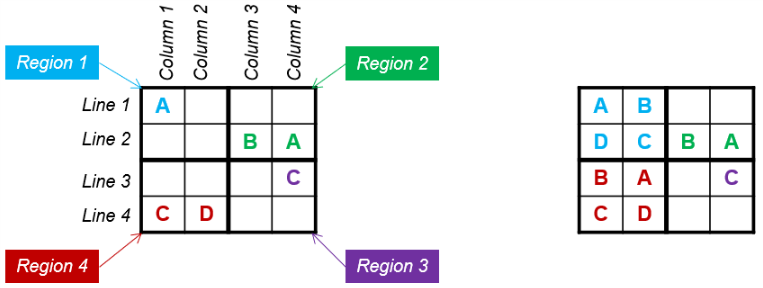
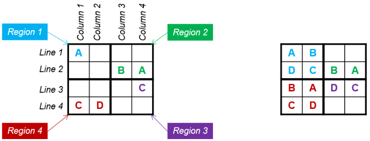
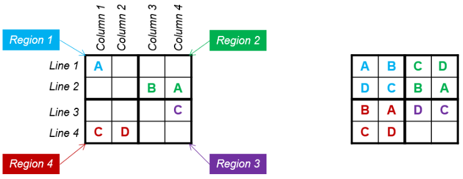
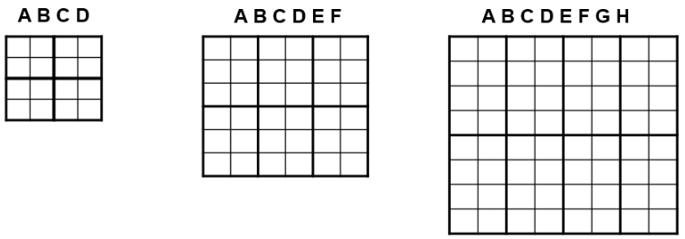

<!DOCTYPE html>
<html>
  <head>
    <title>Trial Experiment</title>


  <meta charset="utf-8">
  <meta name='viewport' content='width=device-width, initial-scale=1.0'>

  <link id="sudocss" rel="stylesheet" media="all" type="text/css" href="./sudoku2x4.css">
  <script type="text/javascript" src="http://code.jquery.com/jquery-2.1.0.min.js"></script>

    <script src="jsPsych/jspsych.js"></script>
    <script src="jsPsych/plugins/jspsych-fullscreen.js"></script>    
    <script src="jsPsych/plugins/jspsych-instructions.js"></script>
    <script src="jsPsych/plugins/jspsych-html-keyboard-response.js"></script>
    <link id="jscss" href="jsPsych/css/jspsych.css" rel="stylesheet" type="text/css"></link>
    
    <!--script type="text/javascript" src="./sudokuJS.js"></script-->
    <script type="text/javascript" src="./sudoku2x4.js"></script>
    <script type="text/javascript" src="./timer.js"></script>
    <script src="jsPsych/jspsych-plugin-sudoku.js"></script>  
  </head>
  <script>

    var timeline = [];

    // timeline.push({
    //   type: 'fullscreen',
    //   fullscreen_mode: true,
    //   message: "Click the button to enter fullscreen mode.<br><br>",
    //   button_label: "Start"
    // });


    var welcome = {
      type: 'instructions',
      pages: [
      'Thank you for agreeing to participate in the study. During this session, you will solve a series of tasks with a time limit and answer a few questions about your experiences. <br> <br>  This session will be split into three stages. At the first stage, you will solve letter Sudoku puzzles of three levels of difficulty (easy, moderately difficult, and very difficult ones). You will have 120 seconds to solve each of those puzzles. When you are half way through, we will also ask you to answer a few questions about your experiences with the puzzles. <br> After that, you will be presented with a variety of different tasks and asked to indicate whether or not you feel capable of solving them. Finally, you will solve those tasks. You will have 120 seconds to solve each of those tasks. <br> <br> After you click NEXT button, you will read the rules that explain how to solve letter Sudoku puzzles and do a practice session to familiarize yourself with the format.'
      ],
      show_clickable_nav: true,
    }
    timeline.push(welcome);     

    
    var instructions = {
      type: 'instructions',
      pages: [
      
      "A Sudoku puzzle is a grid with several cells, that has been subdivided into several subgrids. <br> <br> </img> <br> <br> The objective of Sudoku is to enter letters in each cell, in such a way that: <br> <br> -  Each horizontal row (shown in red) contains each letter exactly once <br> - Each vertical column (shown in green) contains each letter exactly once <br> - Each subgrid or region (shown in blue) contains each letter exactly once <br> <br> In each Sudoku puzzle, several letters have already been entered (the 'givens'); these may not be changed. Your job is to fill the remainder of the grid with letters –respecting, of course, the three constraints mentioned earlier." ,

       
      /* "Let’s have a look at this puzzle and one possible way to go about the solution. <br> </img> <br>The most important thing to keep in mind is that each Line, Column and Region should contain each letter (A B C D) only once. <br><br> Please click NEXT to see the solution. ",
      "</img> <br><br> Step 1 <br><br> Look at Column 1. You see that it already contains A and C, hence B and D are missing. So in which cells would B and D go? Either in Cell 2x1, or in Cell 3x1. Looking at the respective Lines 2 and 3, you see that Line 2 already has B, so B can’t go into the same line. Thus, B goes to Cell 3x1, and D – in the remaining cell. ",
      "</img> <br><br> Step 2: <br><br> Once Column 1 is completed, Line 2 contains 3 letters out of 4. Thus, you complete it with a remaining letter C.",
      "</img> <br><br> Step 3: <br><br> Now you see that Region 4 contains 3 letters out of 4. Thus, you complete it with a remaining letter A. ",
      "</img> <br><br> Step 4: <br><br> Now you see that Column 2 is almost completed and all you have to do is to add a remaining letter B.",
      "</img> <br><br> Step 5: <br><br> Now you see that Line 3 is almost completed and all you need is to add a remaining letter D.",
      "</img> <br><br> Step 6: <br><br> Now you want to complete Line 1. The remaining letters are C and D. Look at Line 3 – it has D and C in Cells 3x3 and 3x4, respectively. Since the column can contain each letter only once, C and D go into Cells 1x4 and 1x3 respectively. Look at Column 4 – it lacks B, which goes to Cell 4x4",
      "</img> <br><br> Step 7: <br><br> Finally, look at Columns 3 and 4 – they are missing letters A and B. They go into Cells 4x3 and 4x3, respectively, following the same logic that each line and column can only contain each letter once. ",
      "The Sudoku that you will solve will have different grid sizes. The grid size indicates the difficulty of the puzzle. Easy puzzles are those with 2x2 grid, moderately difficult puzzles are those with 2x3 grid, and very difficult puzzles are those with 2x4 grid. Depending on the grid size, you will have to enter either ABCD (for easy puzzles), or ABCDEF (for moderately difficult puzzles), or ABCDEFGH (for very difficult puzzles). <br> <br> Remember, no matter how difficult the puzzle is, the rules that apply are always the same. <br> <br> </img>", */


      ],
      show_clickable_nav: true,
    }


    var ready = {
      type: 'html-keyboard-response',
      stimulus: 'Did you understand the rules and feel ready to do the practice session? <br><br> Yes, I understood the rules and am ready to do the test session (Press C) <br><br> No, I did not understand the rules and would like to read them once again (Press R)',
      choices: ['r', 'c'],
      
    }

    var if_node = {
        timeline: [instructions, ready],
        loop_function: function(data){
          var data = jsPsych.data.get().last(1).values()[0];
          if(data.key_press == jsPsych.pluginAPI.convertKeyCharacterToKeyCode('c')){
            return false;
          } else {
            return true;
          }
        }
     }
     timeline.push(if_node);

     


     
     var s1 = {
      type: 'sudoku_trial',
      trial_duration: 3000,  /*currently only for one minute */
      board_size: 'boards2x4',
      board_set: 'a'
     }
     var s2 = {
      type: 'sudoku_trial',
      trial_duration: 3000,  /*currently only for one minute */
      board_size: 'boards2x4',
      board_set: 'b'
     }
     var s3 = {
      type: 'sudoku_trial',
      trial_duration: 3000,  /*currently only for one minute */
      board_size: 'boards2x4',
      board_set: 'c'
     }
     var s4 = {
      type: 'sudoku_trial',
      trial_duration: 3000,  /*currently only for one minute */
      board_size: 'boards2x3',
      board_set: 'a'
     }
     var s5 = {
      type: 'sudoku_trial',
      trial_duration: 3000,  /*currently only for one minute */
      board_size: 'boards2x3',
      board_set: 'b'
     }
     var s6 = {
      type: 'sudoku_trial',
      trial_duration: 3000,  /*currently only for one minute */
      board_size: 'boards2x3',
      board_set: 'c'
     }
     var s7 = {
      type: 'sudoku_trial',
      trial_duration: 3000,  /*currently only for one minute */
      board_size: 'boards2x2',
      board_set: 'a'
     }
     var s8 = {
      type: 'sudoku_trial',
      trial_duration: 3000,  /*currently only for one minute */
      board_size: 'boards2x2',
      board_set: 'b'
     }
     var s9 = {
      type: 'sudoku_trial',
      trial_duration: 3000,  /*currently only for one minute */
      board_size: 'boards2x2',
      board_set: 'c'
     }

     var s_array = [s1, s2, s3, s4, s5, s6, s7, s8, s9];

     var sudo_trials = jsPsych.randomization.shuffleNoRepeats(s_array);


     timeline.push.apply(timeline, sudo_trials);


     timeline.push({
      type: 'html-keyboard-response',
      stimulus: 'Press any key to quit.'
    });

    //  // exit fullscreen mode
    // timeline.push({
    //   type: 'fullscreen',
    //   fullscreen_mode: false
    // });

    jsPsych.init({
      timeline: timeline,
      on_finish: function(){ jsPsych.data.displayData(); },
        default_iti: 250
    })


  </script>
</html>
